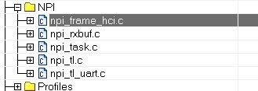
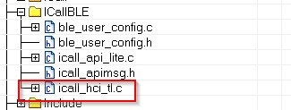
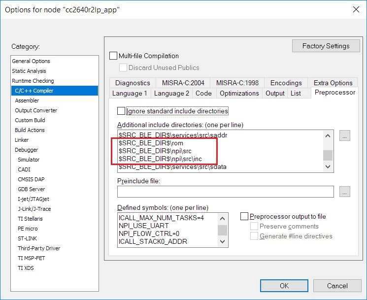

Defining Application Behavior¶
The Sample Applications will often contain simple TI-RTOS tasks with a barebones messaging system between tasks. For more information on how the application tasks works in general, review Introduction.
Directed Advertisements as GATT Server¶
In BLE-Stack 3.03.05.00, Privacy is always enabled. Most of the privacy features are handled by the GAP bond manager in the stack. To conserve flash memory, by default, the GAP bond manager does not enable GATT client features. The implication of these disabled GATT client features is that the GAP bond manager will not query the Central Address Resolution characteristic of the remote device.
In order to perform a directed advertisement when the initiator’s address is set to Private Resolvable Address, the peripheral device must read the Central Address Resolution characteristic of its remote device to make sure address resolution is supported. Failure to do so before sending directed advertisements violates the Bluetooth Core Specification Version 5.1.
If you require the use of directed advertisements, you can add this
functionality by commenting out the #define GBM_GATT_NO_CLIENT
preprocessor option in gapbondmgr.c as shown below:
/* * When GATT_NO_CLIENT is used, the use of GATT Client API is compiled out under * GBM_GATT_NO_CLIENT. This means that, in the context of Privacy 1.2, the Bond * Manager of this device will not read the Central Address Resolution * Characteristic of the remote device. If it is desired that this device uses * a Private Resolvable Address for Directed Advertisements, comment out the * pre-processor logic below. */ #ifdef GATT_NO_CLIENT #ifndef GBM_GATT_NO_CLIENT #define GBM_GATT_NO_CLIENT #endif // !GBM_GATT_NO_CLIENT #endif // GATT_NO_CLIENT
Compiler Options¶
Preprocessor options (IAR) or Predefined symbols (CCS) configure system behavior, features, and resource usage at compile time. Some symbols are required as part of the Bluetooth Low Energy system, while others are configurable. See Accessing Preprocessor Symbols (CCS) or Accessing Preprocessor Symbols (IAR) for details on accessing preprocessor symbols. Symbols defined in a particular project are defined in all files within the project.
Modifying¶
To disable a symbol, put an x in front of the name. To disable
power management, change POWER_SAVING to xPOWER_SAVING.
Options¶
Table 18. lists the preprocessor symbols used by the application in the simple_peripheral project. Symbols that must remain unmodified are marked with an N in the Modify column while symbols that may be modified are marked with a Y.
| Modify | Preprocessor Symbol | Description |
|---|---|---|
| Y | BOARD_DISPLAY_USE_LCD | 0 or 1 determines if the Display driver should use LCD |
| Y | BOARD_DISPLAY_USE_UART | 0 or 1 determines if the Display driver should use UART |
| Y | BOARD_DISPLAY_USE_UART_ANSI | 0 or 1 determines if the Display driver should use UART ANSI |
| N | CC26XX | This selects the chipset |
| N | CC26XX_R2 | This selects the chipset |
| N | DeviceFamily_CC26X0R2 | This selects the chipset |
| N | ICALL_EVENTS | Configures ICall to use Events |
| N | ICALL_JT | Configures ICall to use the jumptable |
| N | ICALL_LITE | Configures ICall to use the jumptable |
| N | STACK_LIBRARY | During build, only includes the correct files for the stack library configuration |
| N | USE_ICALL | Required to use ICall Bluetooth Low Energy and primitive services |
| Y | TBM_ACTIVE_ITEMS_ONLY | When using the Two Button Menu, Only active items will be displayed |
| N | RF_SINGLEMODE | Used for core radio configuration |
| Y | POWER_SAVING | Power management is enabled when defined, and disabled when not defined. Requires same option in stack project |
| Y | ICALL_MAX_NUM_TASKS | Defines the number of ICall aware tasks. Modify only if adding a new TI-RTOS task that uses ICall services |
| Y | ICALL_MAX_NUM_ENTITIES | Defines maximum number of entities that use ICall, including service entities and application entities. Modify only if adding a new TI-RTOS task that uses ICall services |
| N | ICALL_STACK0_ADDR | Stack entry address (flash) |
| Y | Display_DISABLE_ALL | All Display statements are removed and no display operations will take place. See Display.h for more details found in the Drivers virtual folder in the project |
| Y | MAX_NUM_BLE_CONNS | This is the maximum number of simultaneous Bluetooth low energy collections allowed. Adding more connections uses more RAM and may require increasing HEAPMGR_SIZE. Profile heap usage accordingly |
| N | <board_type> |
In SimpleLink CC2640R2 SDK, only CC2640R2_LAUNCHXL is supported by default |
| N | xdc_runtime_Assert | Disables XDC run-time assert xdc_runtime_Assert_DISABLE_ALL |
| N | xdc_runtime_Log | Disables XDC run-time logging xdc_runtime_Log_DISABLE_ALL |
| Y | HEAPMGR_METRICS | Enables collection of ICall heap metrics. See Dynamic Memory Allocation for details on how to profile heap usage |
Table 19. lists the only stack preprocessor options. Symbols that must remain unmodified are marked with an N in the Modify column while symbols that may be modified are marked with a Y.
| Modify | Preprocessor Symbol | Description |
|---|---|---|
| N | CC26XX | This selects the chipset |
| N | CC26XX_R2 | This selects the chipset |
| N | DeviceFamily_CC26X0R2 | This selects the chipset |
| N | FLASH_ROM_BUILD | Allows tools to correctly pull in libraries and applicable jump table configuration for ICall |
| Y | GATT_NO_CLIENT | When defined, the GATT client is not included to save flash. GATT client is excluded from most peripheral projects, included in central and certain peripheral projects (for example, TimeApp) |
| Y | NO_BLE_SECURITY | Unlink security functions from the dispatcher, used in conjunction with disabling GAP bond manager and SNV to further reduce flash space. |
| N | ICALL_EVENTS | Configures ICall to use Events |
| N | ICALL_JT | Configures ICall to use the jumptable |
| N | ICALL_LITE | Configures ICall to correctly use the jumptable |
| N | OSAL_CBTIMER_NUM_TASKS=1 | Configures the stack for BLE Operation |
| N | STACK_LIBRARY | During build, only includes the correct files for the stack library configuration |
| N | USE_ICALL | Required to use ICall Bluetooth Low Energy and primitive services |
| N | RF_SINGLEMODE | Used for core radio configuration |
| Y | POWER_SAVING | Power management is enabled when defined, and disabled when not defined. Requires the same option in application project |
| Y | OSAL_SNV=1 | Select the number of NV pages to use for SNV. Each page is 4kB of flash. A minimum of one page is required when GAP_BOND_MANAGER is defined. See Using Simple NV for Flash Storage |
| Y | OSAL_MAX_NUM_PROXY_TASKS | Number of ICall-aware tasks the protocol task can communicate with. Default is 2. Increase this value if more TI-RTOS tasks are added that make ICall protocol stack API calls |
| Y | EXT_HAL_ASSERT | Extended assert enables support for application callback for asserts |
Creating Additional ICall Enabled Tasks¶
The objective of this section is to familiarize the programmer with the process of adding an RTOS task that can communicate with the BLE-Stack. Tasks call functions within the BLE-Stack must follow a few additional steps to register with ICall. These details are covered below:
1. Follow all the steps detailed in Tasks to create a TI-RTOS task.
- Modify the task’s init function to register with ICall (explained in ICall Initialization and Registration)
- Modify the task’s main function to pend on
syncEvent(explained in ICall Thread Synchronization)
- Modify number of ICall enabled tasks:
- Increase the following preprocessor defines:
- ICALL_MAX_NUM_TASKS (App)
- OSAL_MAX_NUM_PROXY_TASKS (Stack)
- See Accessing Preprocessor Symbols (CCS) and Accessing Preprocessor Symbols (IAR) for steps on how to change symbols
Warning
If (OSAL_MAX_NUM_PROXY_TASKS + 1) != ICALL_MAX_NUM_TASKS do not match, the stack will abort.
- Modify number of ICall entities:
- Increase the following preprocessor defines:
- ICALL_MAX_NUM_ENTITIES (App)
For further description of the above preprocessor defines, please see Table 17.
Using Production Test Mode (PTM)¶
PTM is a way to pass HCI commands from an external communication protocol to the controller of the BLE-Stack.
This section provides a brief overview of enabling PTM and an example of how to implement PTM on a simple_peripheral project using UART as the transfer protocol. The following two sections contain steps and detailed instructions on how to enable the example PTM implementation. The outlined steps will show the approach for IAR but the steps will be the same for CCS.
To enable PTM and send the HCI status back via external transport protocol, the application must:
Add NPI to the Application Project
Network Processor Interface (NPI) is utilized to move HCI commands from the various entities in the embedded application. Relevant NPI files will need to be added to the application to enable access for this functionality.
Configure NPI to Receive Commands From Transport Protocol
A transport protocol is used to transfer commands and status between a BLE HCI Tester and the application. NPI currently supports SPI and UART protocols. UART will be used in the example below. NPI by default utilizes a handshake/flow control system to signal when a slave is ready to transmit/receive and when a master is ready to transmit/receive. This feature will be disabled as the functionality is not needed. For more information on NPI please see Network Processor Interface (NPI)
Send HCI Commands Using ICall Direct API
The embedded application must intercept the NPI Frame and send the message to the BLE-Stack through the enhanced ICall’s direct message API. To configure NPI to only send messages to the embedded application, users must register
NPITask_registerIncomingRXEventAppCB. TheNPITask_registerIncomingRXEventAppCBis used to tell NPI toINTERCEPTmessages and send them to a function which will then utilize ICall Direct API. The ICall HCI Transport Layer (icall_hci_tl.c) will also need to be added to the project. ICall Direct API for any given HCI command can be translated from an NPI frame viaHCI_TL_SendToStack, defined by the ICall HCI Transport Layer, into a Direct API expected by the BLE-Stack.Explicitly Enable PTM and Configure HCI Transport Layer
On the stack side, the transport layer capability is defined in the
build_config.optfile under theToolsfolder. To enable the transport layer, this file will need to be modified to defineHCI_TL_PTM. The stack can now be notified to enter PTM via theHCI_EXT_EnablePTMCmd()Vendor Specific HCI Command.Configure NPI to Forward Responses to Transport Protocol
Events and status of commands should be sent back to the transport protocol. This is done by registering callback functions with the transport layer which forward the messages to NPI. Once NPI has the messages, it then will send the message to the transport protocol configured.
Stack Project Changes¶
Preprocessor Defines¶
Add or modify (if it pre-exists) the following preprocessor define:
...
OSAL_MAX_NUM_PROXY_TASKS=4
...
OSAL_MAX_NUM_PROXY_TASKS increases by one to accommodate for an NPI Task to
be created. So this should increase by one based on your appplication’s
current value. The value of 4 here is because the default simple_peripheral
project use OSAL_MAX_NUM_PROXY_TASKS=3.
Enable PTM and Configure HCI Transport Layer¶
The HCI Transport Layer needs to be configured to use the correct jump table.
On the stack side, the transport layer capabilities is defined in the
build_config.opt file under the Tools folder. By default no
transport layer is included on the stack side to save flash.
In this example, the following modification in build_config.opt
to enable PTM commands:
/* Include Transport Layer (Full or PTM) */ /* -DHCI_TL_NONE Comment this line */ -DHCI_TL_PTM /* -DHCI_TL_FULL */
The stack must now be rebuilt for the changes to take effect and ensure support for the PTM commands.
Application Project Changes¶
Preprocessor Defines¶
Add or modify (if it pre-exists) the following preprocessor defines:
...
ICALL_MAX_NUM_TASKS=4
NPI_USE_UART
NPI_FLOW_CTRL=0
...
ICALL_MAX_NUM_TASKS increases by one to accommodate for an NPI Task to
be created. So this should increase by one based on your appplication’s
current value. The value of 4 here is used as an example. For additional
information on adding ICall Aware Tasks, and the modifications made to the
Application and Stack Projects see
Creating Additional ICall Enabled Tasks.
NPI_USE_UART enables UART as the transport protocol for NPI.
A transport protocol is used to transfer commands and status between
a BLE HCI Tester and the application. NPI currently supports SPI and UART
protocols.
NPI by default utilizes a handshake/flow control system to signal
when a slave is ready to transmit/receive and when a master is
ready to transmit/receive. For testing purposes,
this functionality isn’t needed and is disabled with NPI_FLOW_CTRL=0.
Adding NPI and ICall HCI TL Files¶
To add NPI and the ICall HCI TL file to the project, add the following files to your application. Replace <SDK> with your SDK’s file path. You may want to copy these files into the project instead of linking it to prevent unwanted SDK modifications:
<SDK>\source\ti\blestack\npi\src\npi_frame_hci.c <SDK>\source\ti\blestack\npi\src\npi_rxbuf.c <SDK>\source\ti\blestack\npi\src\npi_task.c <SDK>\source\ti\blestack\npi\src\npi_tl.c <SDK>\source\ti\blestack\npi\src\npi_tl_uart.c <SDK>\source\ti\blestack\icall\app\icall_hci_tl.cFigure 73. Added Files in NPI Folder (IAR)
Figure 74. Added File in ICallBLE Folder (IAR)
{kind=link}
{kind=link}
And remove the following lines from ICallBLE/icall_hci_tl.c
#if (defined(HCI_TL_FULL) || defined(HCI_TL_PTM)) #ifdef HOST_CONFIG #ifndef HCI_TL_PTM #if ( HOST_CONFIG & ( PERIPHERAL_CFG | CENTRAL_CFG ) ) static void host_tl_connEvtCallback(Gap_ConnEventRpt_t *pReport); static void host_tl_connEvtCallbackProcess(Gap_ConnEventRpt_t *pReport); #endif // PERIPHERAL_CFG | CENTRAL_CF #endif /* (HCI_TL_PTM) */ #endif //HOST_CONFIG #endif /* (defined(HCI_TL_FULL) || defined(HCI_TL_PTM)) */
If not added already, within your application’s project settings add the NPI and ROM (for ICall) include directory to the include search path for the IDE:
<SDK>\source\ti\blestack\npi\src <SDK>\source\ti\blestack\npi\src\inc <SDK>\source\ti\blestack\romFigure 75. NPI and ROM Include Directories (IAR)
{kind=link}
Creating the NPI Task in main.c¶
The following changes are to be made in the Startup/main.c file.
To include the NPI Task into the project, add npi_task.h to main.c
and add NPITask_createTask(ICALL_SERVICE_CLASS_BLE); towards the end of
main() where tasks are being created.
#include "simple_peripheral.h" #include "npi_task.h" //... int main() { //... /* Start task for NPI task */ NPITask_createTask(ICALL_SERVICE_CLASS_BLE); /* enable interrupts and start SYS/BIOS */ BIOS_start(); //... }
Set the NPI Task Priority¶
The NPI task must be set to a proper priority in npi_task.c.
Ideally it should be lower than the stack task, but higher than the GAP task.
This allows commands to interrupt tasks if required.
For this example, the priority of 4 worked perfectly:
//! \brief Task priority for NPI RTOS task #define NPITASK_PRIORITY 4
Modifying the App File¶
The following changes are to be made in the application’s .c file.
This example will be provided with the context of simple_peripheral.c.
Refer to the added comments for further information.
Include the following header files:
//... #include "simple_peripheral.h" #include "npi_task.h" // To allow RX event registration #include "npi_ble.h" // To enable transmission of messages to UART #include "icall_hci_tl.h" // To allow ICall HCI Transport Layer //...
Add the following function declarations and definitions:
//... void simple_peripheral_handleNPIRxInterceptEvent(uint8_t *pMsg); // Declaration static void simple_peripheral_sendToNPI(uint8_t *buf, uint16_t len); // Declaration //... /********************************************************************* * @fn simple_peripheral_handleNPIRxInterceptEvent * * @brief Intercept an NPI RX serial message and queue for this application. * * @param pMsg - a NPIMSG_msg_t containing the intercepted message. * * @return none. */ void simple_peripheral_handleNPIRxInterceptEvent(uint8_t *pMsg) { // Send Command via HCI TL HCI_TL_SendToStack(((NPIMSG_msg_t *)pMsg)->pBuf); // The data is stored as a message, free this first. ICall_freeMsg(((NPIMSG_msg_t *)pMsg)->pBuf); // Free container. ICall_free(pMsg); } /********************************************************************* * @fn simple_peripheral_sendToNPI * * @brief Create an NPI packet and send to NPI to transmit. * * @param buf - pointer HCI event or data. * * @param len - length of buf in bytes. * * @return none */ static void simple_peripheral_sendToNPI(uint8_t *buf, uint16_t len) { npiPkt_t *pNpiPkt = (npiPkt_t *)ICall_allocMsg(sizeof(npiPkt_t) + len); if (pNpiPkt) { pNpiPkt->hdr.event = buf[0]; //Has the event status code in first byte of payload pNpiPkt->hdr.status = 0xFF; pNpiPkt->pktLen = len; pNpiPkt->pData = (uint8 *)(pNpiPkt + 1); memcpy(pNpiPkt->pData, buf, len); // Send to NPI // Note: there is no need to free this packet. NPI will do that itself. NPITask_sendToHost((uint8_t *)pNpiPkt); } }
At the end of the initialization function, add the following function calls:
//... static void SimplePeripheral_init(void) { //... // Intercept NPI RX events. NPITask_registerIncomingRXEventAppCB(simple_peripheral_handleNPIRxInterceptEvent, INTERCEPT); // Register for Command Status information HCI_TL_Init(NULL, (HCI_TL_CommandStatusCB_t) simple_peripheral_sendToNPI, NULL, selfEntity); // Register for Events HCI_TL_getCmdResponderID(ICall_getLocalMsgEntityId(ICALL_SERVICE_CLASS_BLE_MSG, selfEntity)); // Inform Stack to Initialize PTM HCI_EXT_EnablePTMCmd(); } //...
At the end of the process stack message function, add the following:
//... static uint8_t SimplePeripheral_processStackMsg(ICall_Hdr *pMsg) { //... switch (pMsg->event) { //... } // Check for NPI Messages hciPacket_t *pBuf = (hciPacket_t *)pMsg; // Serialized HCI Event if (pBuf->hdr.event == HCI_CTRL_TO_HOST_EVENT) { uint16_t len = 0; // Determine the packet length switch(pBuf->pData[0]) { case HCI_EVENT_PACKET: len = HCI_EVENT_MIN_LENGTH + pBuf->pData[2]; break; case HCI_ACL_DATA_PACKET: len = HCI_DATA_MIN_LENGTH + BUILD_UINT16(pBuf->pData[3], pBuf->pData[4]); break; default: break; } // Send to Remote Host. simple_peripheral_sendToNPI(pBuf->pData, len); // Free buffers if needed. switch (pBuf->pData[0]) { case HCI_ACL_DATA_PACKET: case HCI_SCO_DATA_PACKET: BM_free(pBuf->pData); default: break; } } return (safeToDealloc); } //...
When PTM is enabled, a HCI_ResetCmd() is issued. This resets the controller
and various parts of the stack. PTM should be configured such that it’s only
enabled if a particular set of GPIOs or other signals are in a particular state.
Else the regular application should run. So the following functions in the app
should be called when PTM is desired by the developer.
For example, PTM_ENABLE_FLAG can be set to a value when specific conditions
are met, such as when a GPIO is toggled during start up:
if(PTM_ENABLE_FLAG) { // Intercept NPI RX events. NPITask_registerIncomingRXEventAppCB(simple_peripheral_handleNPIRxInterceptEvent, INTERCEPT); // Register for Command Status information HCI_TL_Init(NULL, (HCI_TL_CommandStatusCB_t) simple_peripheral_sendToNPI, NULL, selfEntity); // Register for Events HCI_TL_getCmdResponderID(ICall_getLocalMsgEntityId(ICALL_SERVICE_CLASS_BLE_MSG, selfEntity)); // Inform Stack to Initialize PTM HCI_EXT_EnablePTMCmd(); }
With the project now modified, the PTM configuration will now be entered at
run-time. The application’s only functionality will be to receive PTM commands
over HCI and send a response over HCI. PTM is only a subset of HCI commands and
it won’t be able to do anything other than the commands found in the
hciCmdTable found in hci_tl.c. Check this file for the latest table of
supported commands.
Optimizing Bluetooth Low Energy Flash and RAM Memory Usage¶
Configuration of the Bluetooth Low Energy protocol stack is essential for maximizing the amount of RAM and flash memory available for the application. Refer to Stack Configurations to configure parameters that impact runtime RAM usage, such as the maximum allowable size and number of PDUs. The TI Bluetooth Low Energy protocol stack is implemented to use a small RAM footprint, and allow the application to control the behavior of the stack by using the runtime ICall heap. For example, an application that only sends one GATT notification per connection event must store only one PDU in the heap, whereas as an application that must send multiple notifications must enqueue multiple PDUs in the heap.
To increase the available flash memory allocated to the application project, minimize the flash usage of the protocol stack by including only Bluetooth Low Energy features required to implement the defined role of the device. The available protocol stack configurable features are described in Stack Configurations. Adding additional features to the protocol stack has the net effect of reducing the amount of flash memory to the application.
Flash optimization¶
The following tips may be useful for reducing the footprint of the BLE-Stack. In general, there is a feature vs. flash footprint tradeoff. Each of the improvements below offer a cost in terms of feature removal.
- Verify that your application uses the optimize for flash size compiler optimization settings (default for TI projects).
- Use only one page of SNV or do not use any NV pages if the GAP bond
manager is not required. Set the
NO_OSAL_SNVstack preprocessor option. See Using Simple NV for Flash Storage for a description of SNV. - Exclude the GATT client functionality by defining the
GATT_NO_CLIENTpredefined symbol in the stack project for peripheral devices. This should only be done by devices that do not wish to discover the RPAO characteristic. - Remove or exclude debug DISPLAY, Two button menu or other unused drivers from the application project.
- Use the stack library options defined in
build_config.optto pull in the smallest library available for the given use case. In general, this means a library that implements only one role (i.e. peripheral) with no additional features enabled (i.e. L2CAP CoC). See Stack Configurations. - Remove HAL Asserts by removing the
EXT_HAL_ASSERTdefine from stack project. - If the application does not need to perform any BLE security, remove the GapBondMgr by:
- Add the
NO_BLE_SECURITYpreprocessor definition in the stack project - Comment out the
GAP_BOND_MGRdefine in thebuild_config.opt. See Stack Configurations. - Recompile the stack and the app projects and comment out any remaining calls to GAPBondMgr API’s in the app project.
- Add the
RAM optimization¶
The following tips may be useful for reducing the RAM footprint of the BLE-Stack. It is important to remember that often removing RAM results in reduced throughput or features, the tradeoffs listed below should be evaluated carefully.
If using L2CAP CoC, reference RAM Considerations for defines that may configure L2CAP CoC functionality and their RAM implications
Set
MAX_NUM_PDUandMAX_PDU_SIZEto reduce the amount of packets that can be queued up by the stack at a time. This will reduce heap consumption.Disable LE Secure Connections pairing if not needed. See LE Secure Connections on how to do this. This will save
ECCROMCC26XX_NIST_P256_WORKZONE_LEN_IN_BYTESduring pairing. Removing LESC also removes the requirement of havingMAX_PDU_SIZEset to 69, this can be overriden inble_user_config.hto as low as 27.The LE Data Length Extension feature will default to an RX size of 251. If the peer device also supports DLE and a
connMaxRxOctetsvalue is negotiated > 27 (default) then the controller will allocate connMaxRxOctets*4. 4 is the number of receive buffers in the controller and is a fixed parameter of the stack. However, connMaxRxOctets can be limited by either disabling Data Length Extension or limiting the max of TX and RX ocetets. Trimming the values of TX and RX is covered in RAM Considerations when using DLE.Carefully set
MAX_NUM_BLE_CONNS. This define has a large affect on the amount of dynamic memory used by the stack. Below is a list of structures that the stack will alloc on initialization based on number of Connections. Each structure is multiplied byMAX_NUM_BLE_CONNS. This is not an exhaustive list A rule of thumb is that the stack will allocate the sizes of the structures above on initialization, and around ~(1070 + connMaxRxOctets*4) per connection on connect.sizeof(linkDBItem_t): Link data base entry for each connectionsizeof( l2capChannel_t ): At least one signaling channel for each connectionsizeof(prepareWrites_t): Structure to hold prepare write tableGATT_MAX_NUM_PREPARE_WRITES * sizeof( attPrepareWriteReq_t ): Prepare write queue.sizeof(llConnState_t): Structure to hold connection information2*sizeof(dataQ_t): Each connection’s RX and TX data queue
Check for heap failures by checking
heapmgrMemFailfrom Debugging Common Heap Issues. If heap failures are occurring, attempt to tune stack build configuration using the features and defines above. See Stack Configurations for options that can be configured in the stack.If heap failures still occur after optimizing the BLE-Stack build, the size of the heap can be increased by reducing the size of static allocation. Static allocation (.bss, .data) includes globally defined buffers, runtime task stacks, and other structures that are instantiated without the use of malloc.
- Trim task stack sizes by inspecting them using Task –> Detailed view in TI-RTOS Object Viewer. If there is unused space their size can be decreased.
- The system stack can be reduced in a similar way, its usage is shown under HWI –> Module view in ROV. Changing the system stack size is covered in System Stack.
Warning
The above RAM estimations may vary by release, and are not an exhaustive list. It is intended as a way to allow the developer to profile the RAM requirements based on the desired settings. The best way to estimate RAM usage is to measure it in the field using the techniques covered in Debugging Common Heap Issues
See Check System Flash and RAM Usage With Map File for the procedure to check the size of the configured protocol stack.
Defining Bluetooth Low Energy Behavior¶
This step involves using Bluetooth Low Energy protocol stack APIs to define the system behavior and adding profiles, defining the GATT database, configuring the security model, and so forth. Use the concepts explained in BLE-Stack as well as the Bluetooth Low Energy API reference in BLE Stack API Reference.